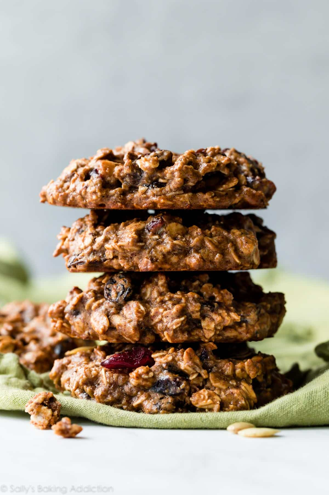

Breakfast Cookies

Description
Hearty and healthy breakfast cookies are naturally gluten free, vegan, low in sugar, and not only taste good—they taste incredible. Made in 1 bowl and ready in 30 minutes, these easy oatmeal cookies will become your new favorite healthy breakfast. I share plenty of substitution ideas below, too.
INGREDIENTS
- 2 cups (160g) quick oats or old-fashioned whole rolled oats
- 1/2 teaspoon salt
- 1 teaspoon ground cinnamon
- 1 cup (250g) almond butter, peanut butter, or sunflower seed butter
- 1/4 cup (60ml) pure maple syrup (or honey)
- 1/3 cup (60g) apple sauce
- 1 large banana, mashed (about 1/2 cup)
- 1/2 cup (75g) dried cranberries
- 1/2 cup (75g) raisins
INSTRUCTIONS
- Preheat oven to 325°F (163°C). Line 2 large baking sheets with parchment paper or silicone baking mats. Set aside.
- Combine all of the ingredients into a large bowl of a stand mixer (or use a hand mixer). Mix until all of the ingredients are combined. The dough is thick and heavy.
- Using a 1/4 cup measuring cup, portion 1/4 cup mounds of cookie dough (about 70g each) onto prepared cookie sheet. Use the back of a spoon to slightly flatten out into a cookie shape. (The cookies will not spread in the oven.)
- Bake for 16–19 minutes or until the edges are lightly browned. Cool cookies on the baking sheets for 10 minutes, then transfer to a wire rack to cool completely.
- Cover leftover cookies and store at room temperature for up to 5 days or in the refrigerator for up to 10 days.